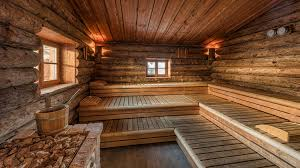
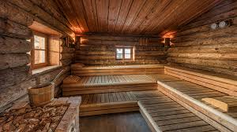

Day 11 - Practical Grid Tasks
Task 1: Basic Website Layout Using Grid
Task 2: Photo Gallery (auto-fit & minmax)
Task 3: Dashboard Layout with Named Areas
Navigation
Statistics Panel
Charts
Task 4: Convert Flexbox Layout into Grid
Flexbox Layout:
Grid Layout:
Task 5: Blog Homepage Using Grid Areas


 
